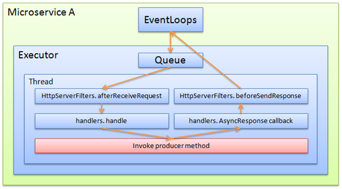
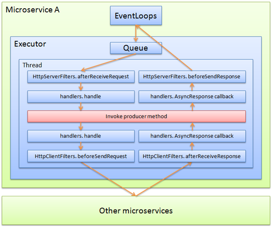
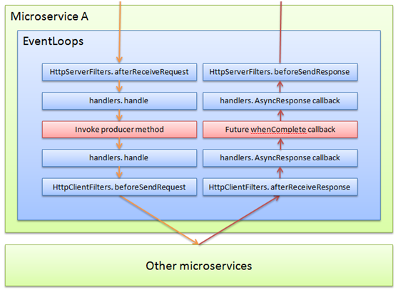

Simple Synchronization Mode Producer:
Sample code:
@GetMapping(path = "/hello/{name}")
public String hello(@PathVariable(name = "name") String name){
return "hello " + name;
}
The corresponding processing flow is as follows:

This is the traditional typical working model. The core idea is not to block network threads, and to put the business in a separate thread (to simplify the expression, only one thread is drawn in the executor)
In general, this mode is not a big problem.
Nested synchronous call:
Not all services are handled simply, you can respond directly, you may need to call other microservices.
Sample code:
public interface Intf{
String hello(String name);
}
@GetMapping(path = "/hello/{name}")
public String hello(@PathVariable(name = "name") String name){
return "from remote: hello " + intf.hello(name);
}
The corresponding processing flow is as follows:

According to the characteristics of this process, you can see the following results:
Because it is a synchronous call, the calling thread of "Microservice A" is always in the blocking wait state before "Other microservices" is not answered, and does not process any other transactions.
When all threads in the Executor are waiting for a remote response, all new requests can only be queued in the Queue and cannot be processed. At this point, the entire system is equivalent to stop working.
To increase the processing power, only increase the number of threads in the Executor, and the operating system can not increase the number of threads indefinitely. The benefit of increasing the number of threads is a parabolic model. After a specific critical value, the system handles The ability will drop, and this threshold will not be too big.
This phenomenon is exacerbated when the remote synchronization operation is required multiple times in the business logic.
"Error" optimization for nested synchronous calls:
For the previous scenario, someone would think that throwing the "Invoke producer method" into another thread pool can solve the problem, including the following:
In the producer method, mark @Async, which is responsible for throwing the call to the method into other thread pools.
Transferring threads through business code inside the producer method
Form the following process:

According to the characteristics of this process, you can see the following results:
"Invoke producer method" must be returned immediately, otherwise, the Executor thread will not be released
"Invoke producer method" must provide a new mechanism to inform the calling process of its return value, not the final return value (currently no such mechanism)
Although the Executor thread is released, the Customer Executor is blocked, waiting for the remote response, the blocking state of the entire system has not changed, and there is one more thread switching out of thin air.
The mechanism seems to have the only effect is to release the executor thread, so that the executor thread has the opportunity to process other requests, which is equivalent to the concept of quarantine, the slow processing of the business does not affect other services; but the concept of serviceComb can be directly Supported, you can configure the specified business method to monopolize the new executor, so that the whole process is the same as the "nested synchronous call", the process is simpler, and you don't need to do this at the "Invoke producer method" level.
Pure Reactive Mechanism
Sample code:
public interface Intf{
CompletableFuture<String> hello(String name);
}
@GetMapping(path = "/hello/{name}")
public CompletableFuture<String> hello(@PathVariable(name = "name") String name){
CompletableFuture<String> future = new CompletableFuture<>();
intf.hello(name).whenComplete((result, exception) -> {
if (exception == null) {
future.complete("from remote: " + result);
return;
}
future.completeExceptionally(exception);
});
return future;
}
The corresponding processing flow is as follows:

Unlike traditional processes, all functions are executed in the eventloop and no thread switching is performed.
After the orange arrow is finished, the occupation of this thread is completed, and it will not block waiting for response. The thread can handle other tasks.
After receiving the remote response, the network data drive starts to take the red arrow response process
As long as there are tasks, the thread will not stop, the task will be executed all the time, you can make full use of the cpu resources, and will not generate redundant thread switching, to consume the CPU unnecessarily.
Because in synchronous mode, a large number of threads are needed to increase the degree of concurrency, and a large number of threads bring additional consumption of thread switching.
The test data shows that the reactive mode only needs to consume less than half of the CPU of the synchronous mode. And can reach or exceed the tps of the synchronous mode, and the delay is lower.
Hybrid Reactive Mechanism
Reactive requires that all logic executed in the eventloop does not allow any blocking actions, including not limited to wait, sleep, large loops, synchronous query DB, and so on.
The bottom of serviceComb is based on vertx. The vertx ecosystem has reactive drivers for various rich components such as JDBC, MQ, zooKeeper, etc. Under normal circumstances, it can meet the requirements.
However, in some scenarios, there are indeed some synchronization operations that cannot be avoided, such as:
Private security hardened redis, only provides synchronous drive
More complex business operations
......
At this point, the logic of these synchronizations can be extracted and placed in the thread pool for processing, while other parts still use the reactive process.
Some notes about reactive:
Producer:
Whether the producer uses reactive and consumer to call, there is no connection
When the operation return value is the CompletableFuture type, the default operation is in reactive mode. If you need to force this operation to work in thread pool mode, you need to configure it in microservice.yaml explicitly. If an operation, its schemaId is sid, operationId For asyncQuery, you need to do the following:
servicecomb:
executors:
Provider:
sid.asyncQuery: cse.executor.groupThreadPool
The cse.executor.groupThreadPool here is the default thread pool built into serviceComb, which can be arbitrarily specified by the user as its custom thread pool.
Consumer:
Whether the consumer uses reactive and producer how to achieve, there is no connection
Currently only supports transparent RPC mode, using JDK native CompletableFuture to carry this function
completableFuture's when, then, etc. can be used directly
However, the async series of completableFuture is another thread pool to perform functions. It is not recommended.
Support for RxJava Observable will be added later.
Support for AsyncRestTemplate will be added later.